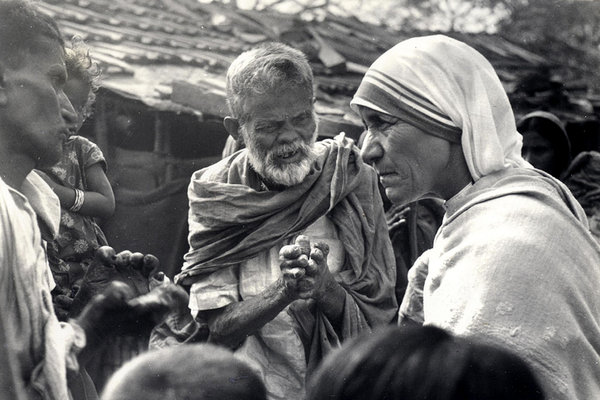

Inspirational Heroes
Baba Amte
Murlidhar Devidas "Baba" Amte was born on 26 December 1914 in the city of Hinganghat in the Wardha District of Maharashtra. Though he was born in a wealthy family he was always aware of the class inequality that prevailed in Indian society. He never appreciated the restrictions which prevented him from playing with the 'lower-caste' servants' children.
Amte strove to dispel the widespread belief that leprosy was highly contagious; he even allowed bacilli from a leper to be injected into him as part of an experiment aimed at proving that leprosy was not highly contagious. Amte founded three ashrams for treatment and rehabilitation of leprosy patients, disabled people and people from marginalised sections of the society in Maharashtra. On 15 August 1949, he and his wife Sadhna Amte started a leprosy hospital in Anandvan under a tree.

Mother Teresa
Teresa was in her early years when she was fascinated by stories of the lives of missionaries and their service in Bengal; by age 12, she was convinced that she should commit herself to religious life. On 10 September 1946, Teresa experienced what she later described as "the call within the call" when she travelled by train to the Loreto convent in Darjeeling from Calcutta for her annual retreat. She began missionary work with the poor in 1948[
She opened a hospice for those with leprosy, calling it Shanti Nagar (City of Peace). The Missionaries of Charity established leprosy-outreach clinics throughout Calcutta, providing medication, dressings and food.